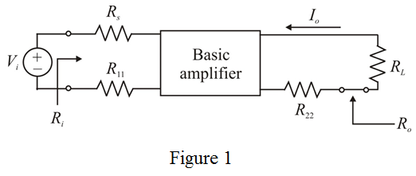
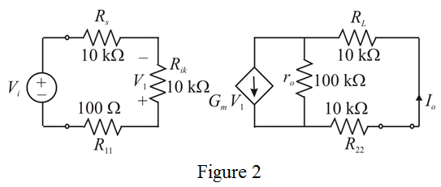
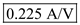
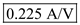
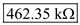
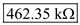
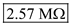
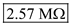

Step 1:
Draw the A circuit for the series-series feedback amplifier:

Step 2:
Equivalent A circuit for the series-series feedback amplifier is,

Step 3:
From the equivalent circuit for the series-series feedback amplifier
Input resistance
An input resistance (with port 1 open-circuited
Source resistance and
Substitute corresponding values.
Simplify further.
Step 4:
From figure 2, output current is,
Short circuit trans-conductance
Output resistance
An input resistance (with port 2 open-circuited
Load resistance 
Substitute corresponding values.
Substitute for  in the equation.
in the equation.
Rewrite the equation.
Thus, the open loop gain  is.
is.
Step 5:
Closed loop gain of series-series feedback amplifier employs a trans-conductance amplifier is,

Thus, the loop gain is,
Input resistance of the open loop amplifier is,
Substitute corresponding values.
Input resistance of the closed loop amplifier.
Substitute corresponding values.
To obtain  which is the resistance seen by
which is the resistance seen by  from the circuit, we subtract
from the circuit, we subtract  from
from
Thus, the input resistance of the circuit  is .
is .
Step 6:
Open loop output resistance  is,
is,
Output resistance (with feedback) is,
Obtain  , which is the resistance seen by
, which is the resistance seen by  from the circuit by subtracting
from the circuit by subtracting  from
from
Thus, the output resistance of the circuit  is.
is.